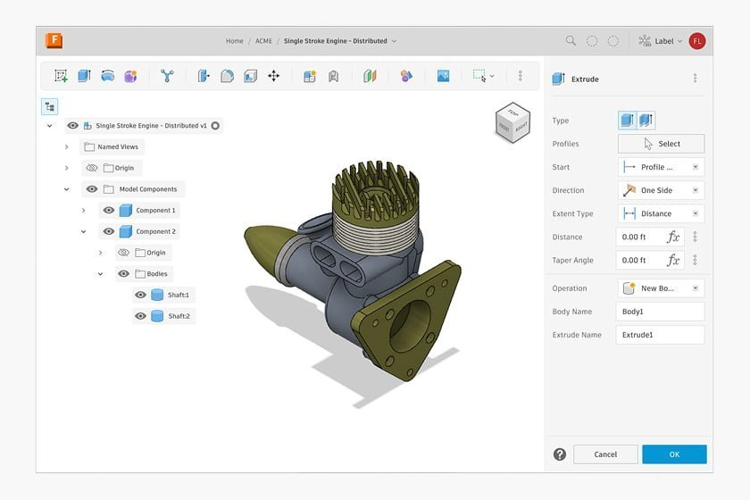

UX Research Platform
Streamlining User Research for Enterprise Teams

Project Overview
- Client/Company: [Client/Company Placeholder - e.g., Autodesk]
- My Role: [Jason's Role Placeholder - e.g., Lead UX Designer]
- Duration/Timeline: [Project Duration Placeholder - e.g., 6 Months]
- Tools & Technologies: [Tools & Technologies Placeholder - e.g., Figma, Jira, Dovetail]
The Challenge
[Detailed problem statement for the UX Research Platform. e.g., Enterprise teams struggled with fragmented research processes, making it difficult to synthesize findings and share insights effectively. This led to duplicated efforts and missed opportunities.]
The Process & Approach
[Overall approach description for this specific project.]
Discovery & Research
[Details of research for this project: stakeholder interviews, competitive analysis, user journey mapping for researchers.]
Design & Prototyping
[Details of design for this project: information architecture, wireframes for key platform features, interactive prototypes for core workflows.]

Testing & Iteration
[Details of testing for this project: usability testing sessions with internal research teams, feedback analysis, and iterative design refinements.]
The Solution
[Showcase the final designs for the UX Research Platform. Highlight key features like centralized repository, tagging, and insight sharing capabilities.]


Results & Impact
[Quantifiable results for this project, e.g., "Reduced time to find research insights by X%", "Increased cross-team visibility of research by Y%". Key learnings.]
- Metric 1: [Result Placeholder for UX Research Platform]
- Metric 2: [Result Placeholder for UX Research Platform]
- Key Learning: [Learning Placeholder for UX Research Platform]